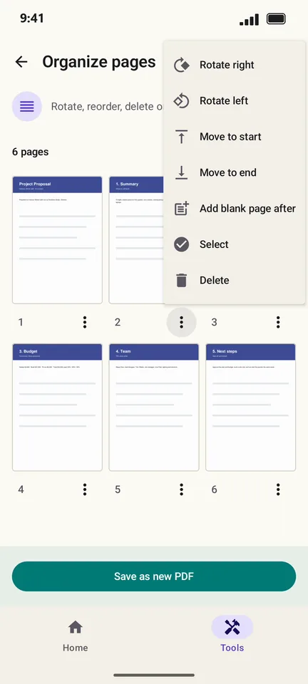
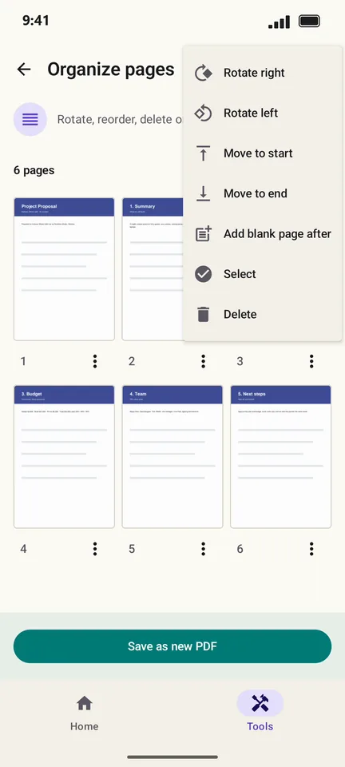
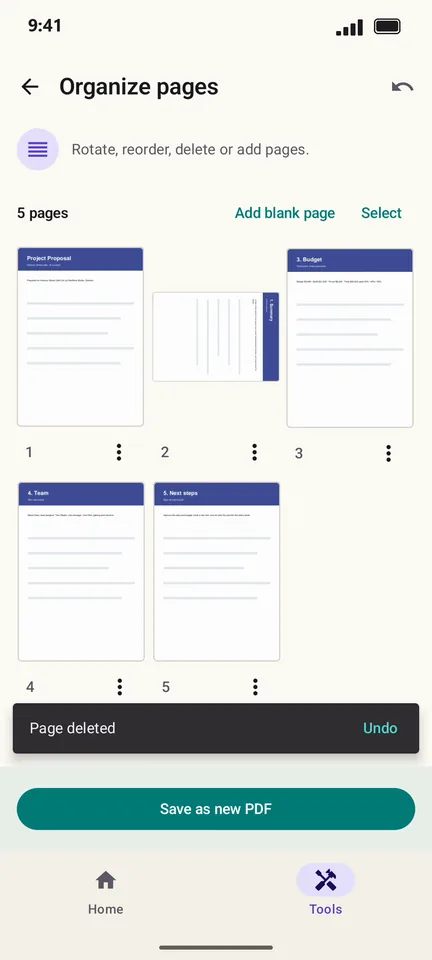

How to rotate, reorder or delete pages in a PDF on Android
A scan came out sideways, the pages are in the wrong order, or there is a blank page in the middle. PageCat shows every page as a thumbnail so you can rotate, move, delete or add pages and save a fixed copy.
Steps
Open the Tools tab, tap Organize pages and pick the PDF.

Tap ⋮ under a page for Rotate right, Rotate left, Move to start, Delete and more.

Long-press and drag a page to move it. Deleted a page by mistake? Tap Undo.

Tap Save as new PDF.
Good to know
- Add blank page inserts an empty page, handy before printing double-sided.
- Tap Select to rotate or delete many pages at once.
Questions
Can I rotate just one page?
Yes. Use the ⋮ menu under that page; the others stay as they are.
Is the original file changed?
No. Save as new PDF keeps your original untouched.